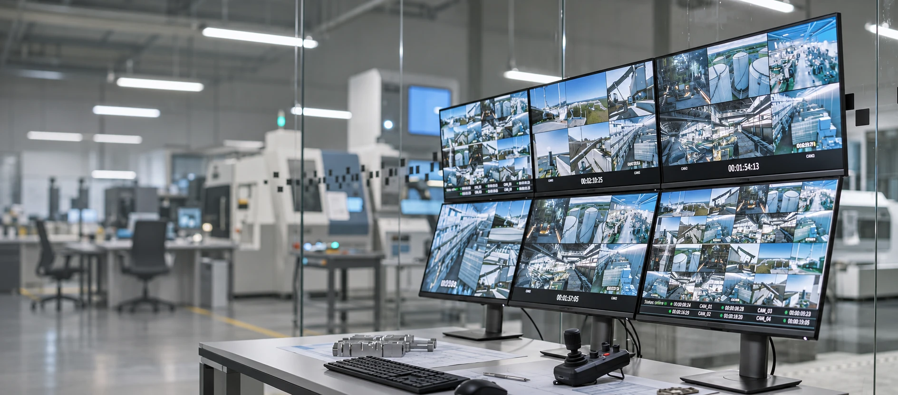
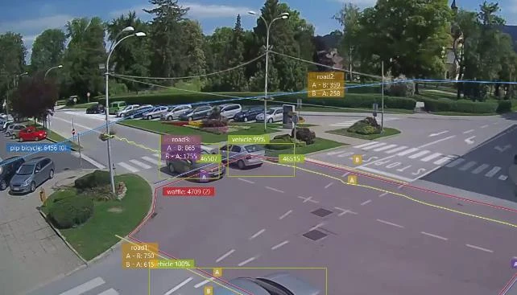

Наблюдение можно вести через любую камеру.
Камеры подключаются нативно, а также через ONVIF, RTSP, MPEG.
TRASSIR VMS
Система управления видеонаблюдением (VMS)
Профессиональная программа для организации видеонаблюдения
Получить консультацию
Совместима с 99% камер и серверов на рынке
Подойдет любое устройство для записи видеоданных.
Windows x64
Работает на всех основных операционных системах
- Windows x64
- Debian
- Astra Linux
- TRASSIR OS на базе Linux
- Совместимость с контейнерными экосистемами
Объединяет всё, что нужно от видеонаблюдения в одну систему
Система управления видеонаблюдением (VMS)
- Видеонаблюдение
- Запись и управление архивом
- Ситуационный центр и карты
- Мониторинг состояния системы
- Управление пользователями
- Интеграция со СКУД, ОПС и другими системами
- API, автоматизация и кастомизация
- Видеоаналитика
Расширяйте возможности VMS под задачи проекта
Центр управления тревогами TRASSIR PSIM
TRASSIR PSIM расширяет VMS до уровня управления комплексными системами безопасности: собирает события из системы видеонаблюдения, видеоаналитики, СКУД и охранно-пожарной сигнализации в едином интерфейсе. Тревоги сортируются по приоритету, а связанные события объединяются.
Проверяйте инцидент по видео с ближайших камер и карте объекта. Оператор получает инструкцию по действиям, а система сохраняет отчёт о выполненных шагах.
Подробнее
Мониторинг системы видеонаблюдения с TRASSIR CMS
TRASSIR CMS управляет распределённой инфраструктурой TRASSIR: объединяет серверы, камеры и пользователей. Через веб-интерфейс и мобильное приложение можно смотреть видео и архив, контролировать оборудование и получать уведомления о сбоях.
Централизованно обновляйте серверы, управляйте пользователями, сохраняйте резервные копии настроек и дублируйте архив. Cloud Connect сокращает расход трафика при ограниченной пропускной способности интернет-каналов.
Подробнее
Видеоаналитика
Видеоаналитика TRASSIR добавляет интеллектуальный анализ видеопотока: распознаёт объекты, классифицирует их, отслеживает поведение и фиксирует заданные сценарии в реальном времени.
Анализ выполняется на камере, сервере или в программном обеспечении. Оператор получает тревоги, метки, отчёты и статистику вместо непрерывного просмотра видео.
Подробнее
Сертифицированное российское ПО
TRASSIR VMS подходит для проектов с локализацией и импортозамещением и входит во все ключевые российские реестры:
- Реестр отечественного ПО Министерства цифрового развития, связи и массовых коммуникаций РФ (Реестр Минцифры РФ)
- Совместимо с ЕАИС
- Сертификат соответствия ISO 9001:2015
- Сертификат соответствия ФСТЭК по защите информации
- Единый реестр российских программ для электронных вычислительных машин и баз данных (реестр Минцифры РФ)
- Сертификат соответствия с Astra Linux
Собственная разработка и производство:
- Решения с учетом требований российского рынка
- Удобный и понятный интерфейс
- Поддержка на всех этапах внедрения
- Прямой доступ к команде разработчиков
Лицензии и функции
| Функция | AnyIP | AnyIP PRO | EnterpriseIP |
|---|---|---|---|
| Видеонаблюдение | |||
| Подключение камер (включая ONVIF, RTSP, MPEG) | Включено | Включено | Включено |
| Профессиональный интерфейс оператора видеонаблюдения | Включено | Включено | Включено |
| Интерфейс десктопного приложения TRASSIR Client | Включено | Включено | Включено |
| Интерфейс TRASSIR Client через web-браузер | Включено | Включено | Включено |
| Использование нескольких мониторов | Включено | Включено | Включено |
| Создание шаблонов раскладок камер | Включено | Включено | Включено |
| Экспорт и поиск по архиву для быстрого просмотра | Включено | Включено | Включено |
| Управление PTZ-камерами | Включено | Включено | Включено |
| Управление распределённой системой | |||
| Частное облако и контроль оборудования через TRASSIR CMS | Не входит в лицензию | Включено | Включено |
| Обновление серверов и резервное сохранение настроек через CMS | Не входит в лицензию | Включено | Включено |
| Копирование видеоархива в CMS | Не входит в лицензию | Включено | Включено |
| Прямое подключение камер к CMS | Не входит в лицензию | Включено | Включено |
| Лицензирование и серверные ОС | |||
| Перераспределение лицензий с помощью License Manager | Не входит в лицензию | Не входит в лицензию | Включено |
| Установка сервера VMS на Debian | Не входит в лицензию | Не входит в лицензию | Включено |
| Установка сервера VMS на Astra Linux | Серверы TRASSIR* | Не входит в лицензию | Включено |
* AnyIP (Astra Linux) работает только на NeuroStation Astra и UltraStation Astra. Для самостоятельно собранного сервера на Astra Linux нужна EnterpriseIP.
Подбор оборудования
Опишите задачу —
и мы подберем решение
под ваш проект
От небольшой системы до сложного проекта.
Поможем выбрать подходящее решение.